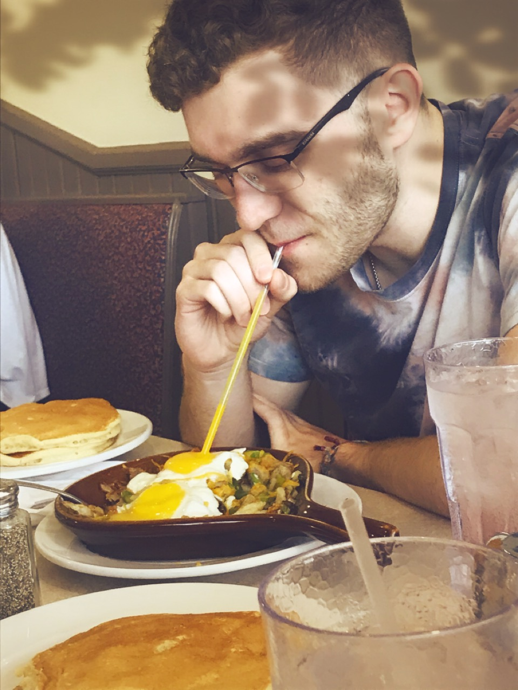

 A second-year at Rose-Hulman Institute of Technology. Interests lie in autonomous vehicles, autonomous programming, image recognition, and computer vision. I'm pursuing a double major in computer science and software engineering with a quadruple minor in entrepreneurial studies, sustainability, artificial intelligence, and philosophy. Between high school and college, I've had five years of programming experience (mostly Java, but familiar with HTML, CSS, Python, C++, and more; back-end development and object-oriented programming), built and programmed an autonomous racecar, and developed a music recommendation website.